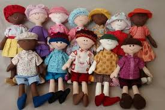
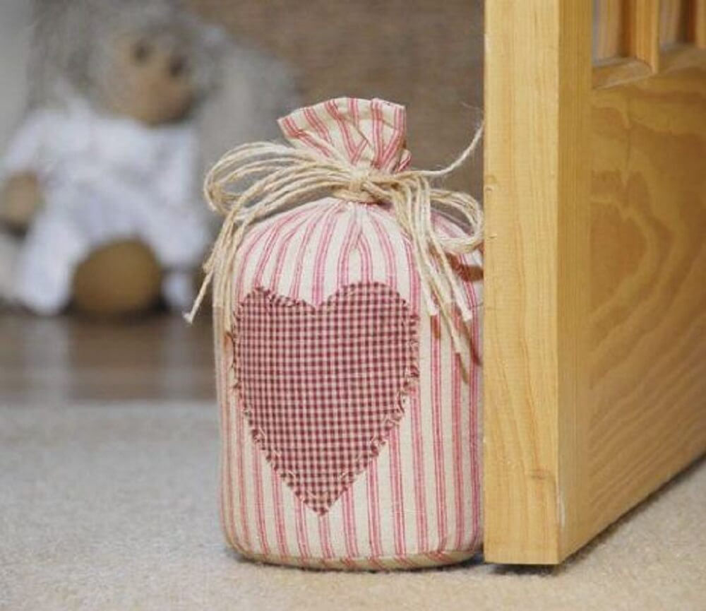

Reutilização de Retalhos e Ideias Criativas
O projeto transforma retalhos de roupas usadas em brinquedos de pano para crianças em situação de
vulnerabilidade. Iniciado em Palmital-SP, conta com apoio de organizações locais e promove sustentabilidade
e inclusão social.
A reutilização de retalhos é uma prática sustentável e acessível que transforma sobras de tecido em novas
criações cheias de personalidade. Vai além da economia de materiais: ela contribui com o meio ambiente,
incentiva o consumo consciente e ainda pode gerar renda ou fortalecer vínculos comunitários.
Ao reaproveitar o que seria descartado, você reduz o impacto ambiental da indústria têxtil — uma das
mais poluentes do mundo — e ainda estimula a criatividade e a economia circular.
Essa ideia se conecta diretamente à ODS 12 – Consumo e Produção Responsáveis, além de dialogar com ações
educativas e empreendedoras. Feita à mão com retalhos reaproveitados. R$20,00 Costurado com retalhos por nossas voluntárias. R$25,00 Costurado com carinho por nossas voluntárias. R$15,00 Costurado com carinho por nossas voluntárias. R$40,00 O que precisa: retalhos variados, zíper, forro, máquina de costura (ou costura manual). Como fazer: Dica: use retalhos coloridos pra deixar bem divertido! O que precisa: pedaços de jeans velho, algodão cru, retalhos grandes. Como fazer: O que precisa: tecidos de algodão, enchimento ou espuma, linha e agulha. Como fazer: O que precisa:Retalhos Feltro
Retalhos tecido
Cartão
Eva
Fitas,rendas
Linha e agulha
Cola silicone fria
e quente Como fazer:Reutilização de Retalhos

Boneca de Pano
Ursinho Colorido

Ursinho Colorido
Ursinho Colorido
Ideias criativas para fazer
Necessaire ou estojo patchwork
Ecobags ou sacolas criativas
Almofadas personalizadas
Marcadores de livro têxteis
Entre em Contato para fazer Doações.